library(readr)
library(dplyr)
library(tidyr)
library(forcats) # makes working with factors easier
library(ggplot2)
library(leaflet) # interactive maps
library(DT) # interactive tables
library(scales) # scale functions for visualization
library(janitor) # expedite cleaning and exploring data
library(viridis) # colorblind friendly color paletteAssigment 5: Data Visualization
1. Load the packages
2. Load the data
# read in data from the data directory after manually downloading data
delta_visits_raw <- read_csv(here::here("raw_data/Socioecological_monitoring_data.csv"))# Explore the data
## Check out column names
colnames(delta_visits_raw) [1] "EcoRestore_approximate_location" "Reach"
[3] "Latitude" "Longitude"
[5] "Date" "Time_of_Day"
[7] "sm_boat" "med_boat"
[9] "lrg_boat" "bank_angler"
[11] "scientist" "cars"
[13] "notes" ## Peak at each column and class
glimpse(delta_visits_raw)Rows: 55
Columns: 13
$ EcoRestore_approximate_location <chr> "Decker Island", "Decker Island", "Dec…
$ Reach <chr> "Brannan to Decker Island", "Decker Is…
$ Latitude <dbl> 38.10587, 38.10587, 38.08456, 38.08456…
$ Longitude <dbl> -121.7064, -121.7064, -121.7204, -121.…
$ Date <date> 2017-07-07, 2017-07-07, 2017-07-07, 2…
$ Time_of_Day <chr> "unknown", "unknown", "unknown", "unkn…
$ sm_boat <dbl> 0, 0, 0, 0, 2, 0, 0, 7, 1, 0, 0, 0, 0,…
$ med_boat <dbl> 2, 4, 0, 1, 10, 0, 0, 1, 2, 0, 1, 6, 1…
$ lrg_boat <dbl> 0, 0, 0, 0, 1, 0, 0, 0, 0, 0, 0, 0, 0,…
$ bank_angler <dbl> 1, 3, 0, 0, 0, 0, 0, 0, 2, 0, 0, 5, 0,…
$ scientist <dbl> 0, 0, 0, 0, 0, 0, 0, 0, 0, 0, 0, 0, 0,…
$ cars <dbl> 0, 0, 0, 0, 0, 0, 0, 0, 0, 0, 0, 0, 0,…
$ notes <chr> "no notes", "no notes", "Nobody or tra…## From when to when
range(delta_visits_raw$Date)[1] "2017-07-07" "2018-03-13"## Which time of day?
unique(delta_visits_raw$Time_of_Day)[1] "unknown" "morning"3. Getting the data ready
janitor::clean_names(): is for cleaning column names inside the dataset
delta_visits <- delta_visits_raw %>%
janitor::clean_names()colnames(delta_visits) [1] "eco_restore_approximate_location" "reach"
[3] "latitude" "longitude"
[5] "date" "time_of_day"
[7] "sm_boat" "med_boat"
[9] "lrg_boat" "bank_angler"
[11] "scientist" "cars"
[13] "notes" visits_long <- delta_visits %>%
pivot_longer(cols = c(sm_boat, med_boat, lrg_boat, bank_angler, scientist, cars),
names_to = "visitor_type",
values_to = "quantity") %>%
rename(restore_loc = eco_restore_approximate_location) %>%
select(-notes)
## Checking the outcome
head(visits_long)# A tibble: 6 × 8
restore_loc reach latitude longitude date time_of_day visitor_type
<chr> <chr> <dbl> <dbl> <date> <chr> <chr>
1 Decker Island Brannan … 38.1 -122. 2017-07-07 unknown sm_boat
2 Decker Island Brannan … 38.1 -122. 2017-07-07 unknown med_boat
3 Decker Island Brannan … 38.1 -122. 2017-07-07 unknown lrg_boat
4 Decker Island Brannan … 38.1 -122. 2017-07-07 unknown bank_angler
5 Decker Island Brannan … 38.1 -122. 2017-07-07 unknown scientist
6 Decker Island Brannan … 38.1 -122. 2017-07-07 unknown cars
# ℹ 1 more variable: quantity <dbl># Calculate the daily visits by restore_loc, date, and visitor_type.
daily_visits_loc <- visits_long %>%
group_by(restore_loc, date, visitor_type) %>%
summarise(daily_visits = sum(quantity))
head(daily_visits_loc)# A tibble: 6 × 4
# Groups: restore_loc, date [1]
restore_loc date visitor_type daily_visits
<chr> <date> <chr> <dbl>
1 Decker Island 2017-07-07 bank_angler 4
2 Decker Island 2017-07-07 cars 0
3 Decker Island 2017-07-07 lrg_boat 0
4 Decker Island 2017-07-07 med_boat 6
5 Decker Island 2017-07-07 scientist 0
6 Decker Island 2017-07-07 sm_boat 04. Plotting with ggplot2
## Option 1 - data and mapping called in the ggplot() function
ggplot(data = daily_visits_loc,
aes(x = restore_loc, y = daily_visits)) +
geom_col()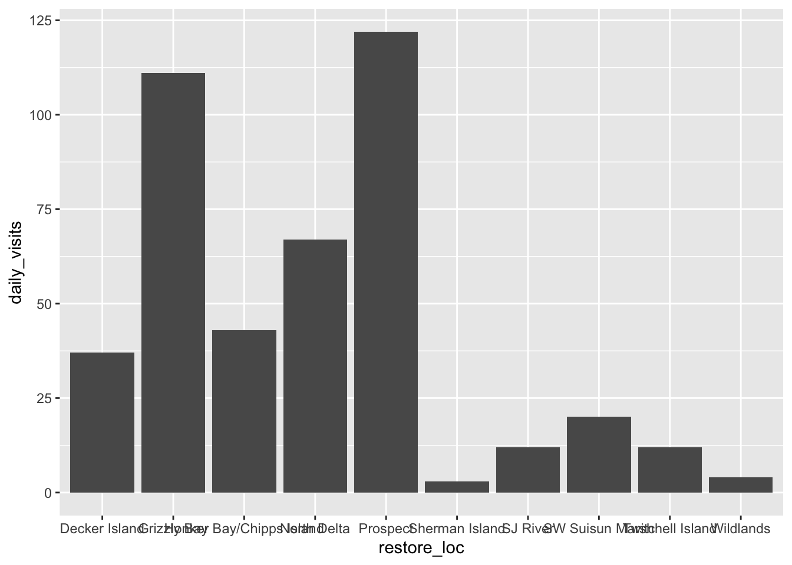
## Option 2 - data called in ggplot function; mapping called in geom
ggplot(data = daily_visits_loc) +
geom_col(aes(x = restore_loc, y = daily_visits))
## Option 3 - data and mapping called in geom
ggplot() +
geom_col(data = daily_visits_loc,
aes(x = restore_loc, y = daily_visits))
## Boxplot
daily_visits_loc %>%
separate(date, c("year", "month", "day"), sep = "-") %>%
filter(daily_visits < 30,
visitor_type %in% c("sm_boat", "med_boat", "lrg_boat")) %>%
ggplot(aes(x = visitor_type, y = daily_visits)) +
geom_boxplot()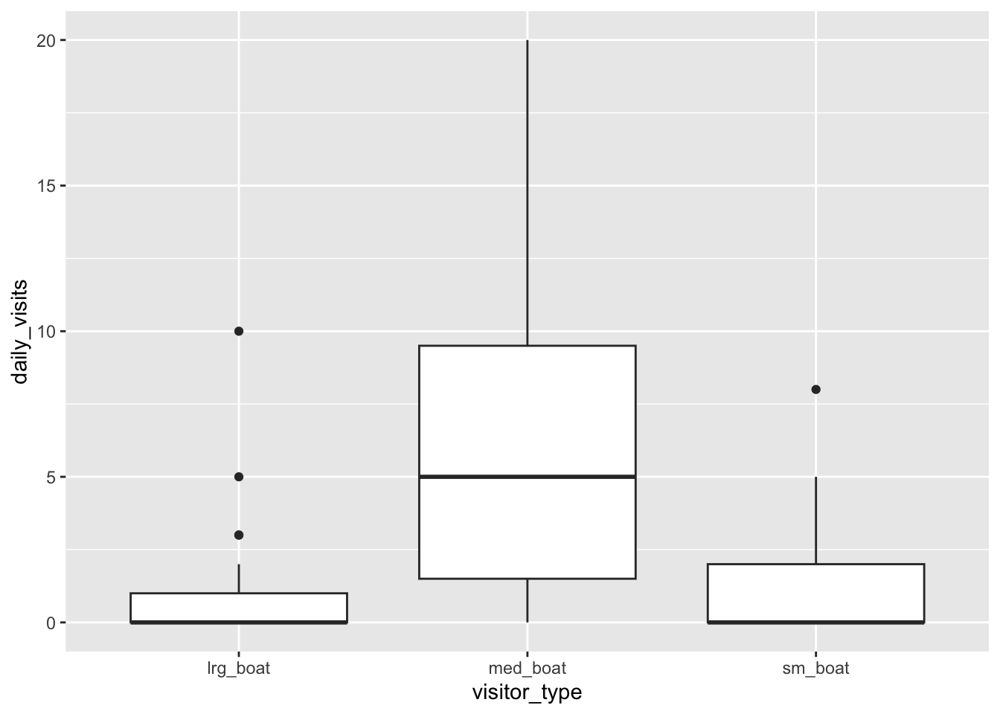
## Violin plot
daily_visits_loc %>%
separate(date, c("year", "month", "day"), sep = "-") %>%
filter(daily_visits < 30,
visitor_type %in% c("sm_boat", "med_boat", "lrg_boat")) %>%
ggplot(aes(x = visitor_type, y = daily_visits)) +
geom_violin()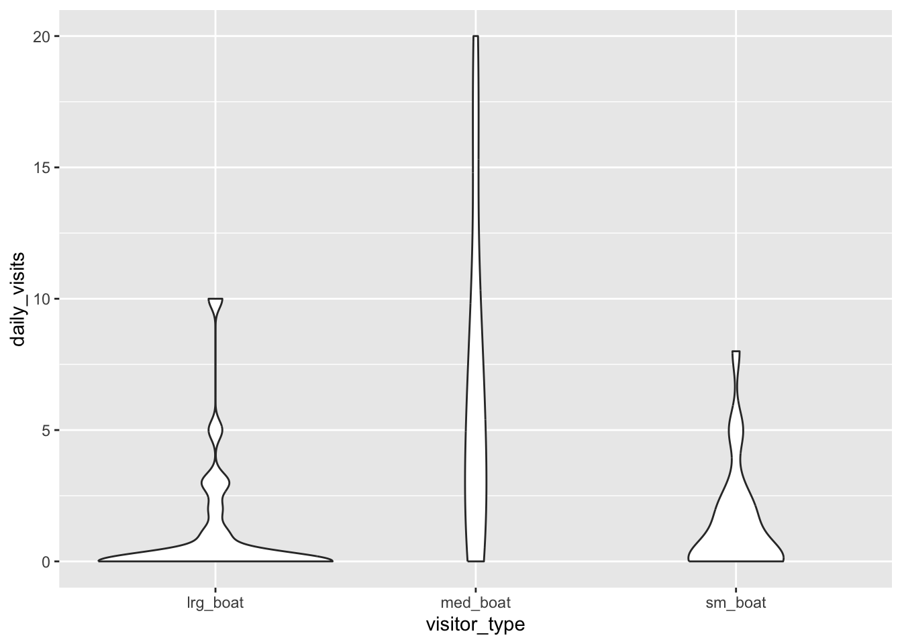
## Line and point
daily_visits_loc %>%
filter(restore_loc == "Decker Island",
visitor_type == "med_boat") %>%
ggplot(aes(x = date, y = daily_visits)) +
geom_line() +
geom_point()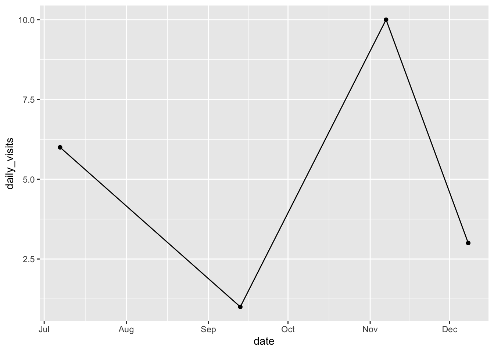
## Customizing plot
ggplot(data = daily_visits_loc,
aes(x = restore_loc, y = daily_visits,
fill = "blue")) +
geom_col()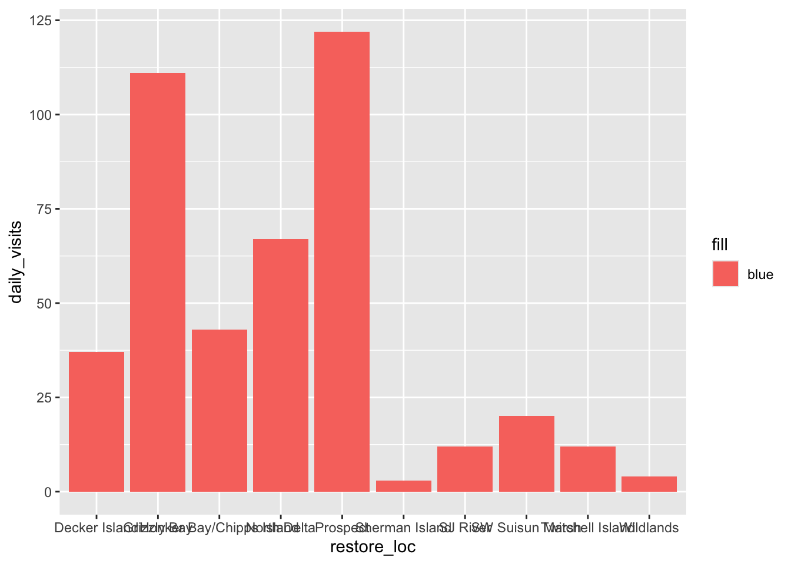
ggplot(data = daily_visits_loc,
aes(x = restore_loc, y = daily_visits)) +
geom_col(fill = "blue")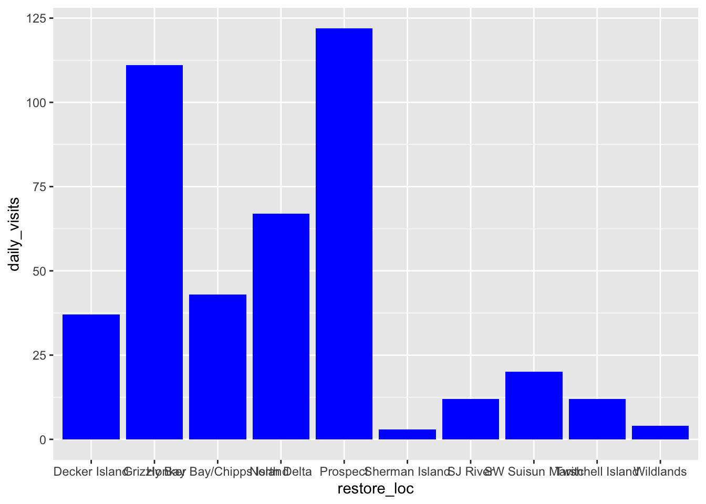
## Map the color of the bars to a variable## Setting ggplot themes
### Add a title, subtitle and adjust labels using labs()
### Flip the x and y axis to make it a sideways column plot and make the labels easier to read
### Include a built in theme using theme_bw()
ggplot(data = daily_visits_loc,
aes(y = restore_loc, x = daily_visits, fill = visitor_type)) +
geom_col() +
labs(x = "Number of Visits",
y = "Restoration Location",
fill = "Type of Visitor",
title = "Total Number of Visits to Delta Restoration Areas by visitor type",
subtitle = "Sum of all visits during July 2017 and March 2018") +
theme_bw()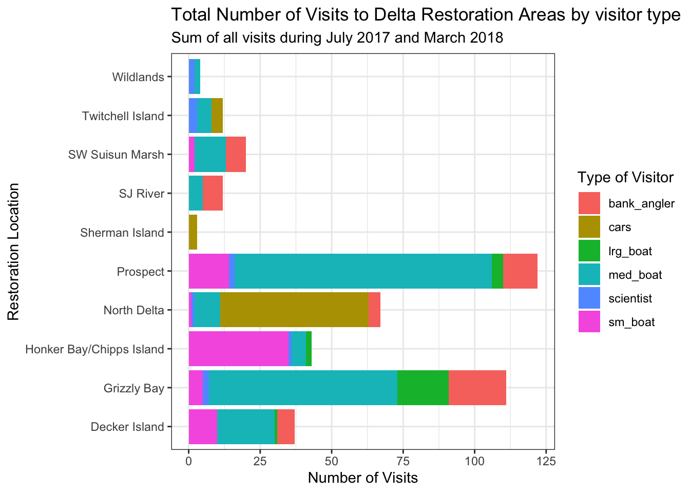
## Useful baseline themes are
#theme_minimal()
#theme_light()
#theme_classic()ggplot(data = daily_visits_loc,
aes(y = restore_loc, x = daily_visits, fill = visitor_type)) +
geom_col() +
labs(x = "Number of Visits",
y = "Restoration Location",
fill = "Type of Visitor",
title = "Total Number of Visits to Delta Restoration Areas by visitor type",
subtitle = "Sum of all visits during study period") +
theme_bw() +
theme(legend.position = "bottom",
axis.ticks.y = element_blank()) 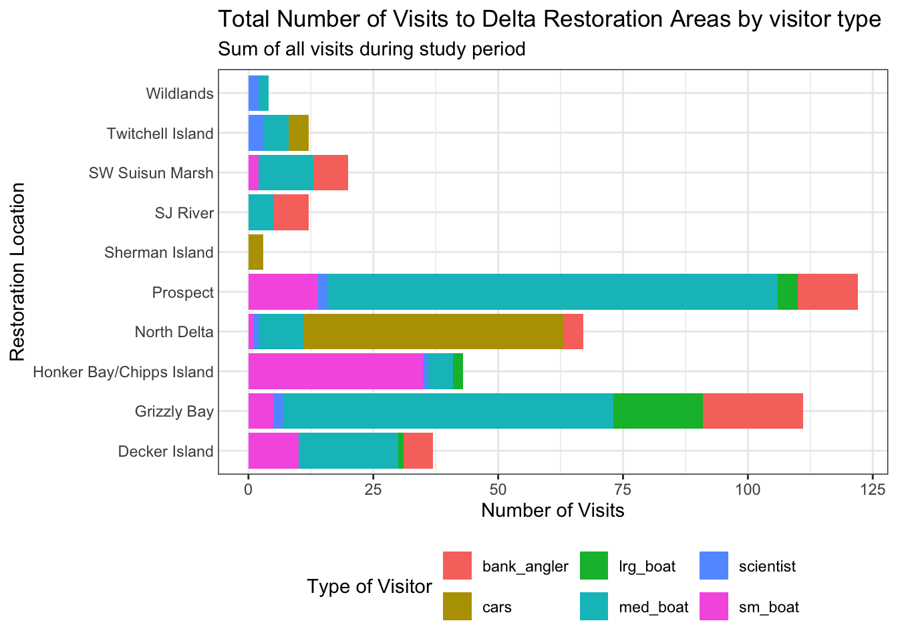
## save the result of a series of theme() function calls to an object to use on multiple plots
my_theme <- theme_bw(base_size = 16) +
theme(legend.position = "bottom",
axis.ticks.y = element_blank())
ggplot(data = daily_visits_loc,
aes(y = restore_loc, x = daily_visits, fill = visitor_type)) +
geom_col() +
labs(x = "Number of Visits",
y = "Restoration Location",
fill = "Type of Visitor",
title = "Total Number of Visits to Delta Restoration Areas by visitor type",
subtitle = "Sum of all visits during study period") +
my_theme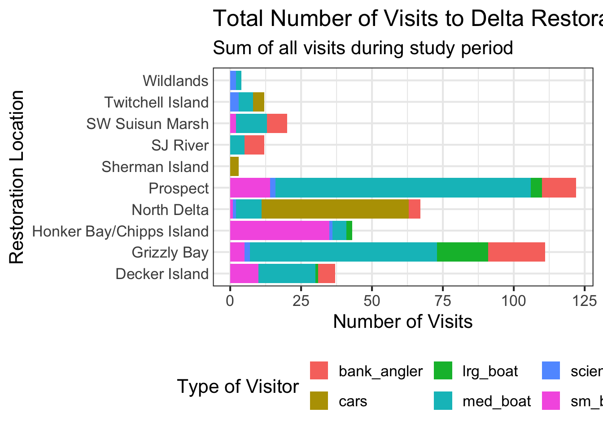
ggplot(data = daily_visits_loc,
aes(y = restore_loc, x = daily_visits, fill = visitor_type)) +
geom_col() +
labs(x = "Number of Visits",
y = "Restoration Location",
fill = "Type of Visitor",
title = "Total Number of Visits to Delta Restoration Areas by visitor type",
subtitle = "Sum of all visits during study period") +
scale_x_continuous(breaks = seq(0,120, 20), expand = c(0,0)) +
my_theme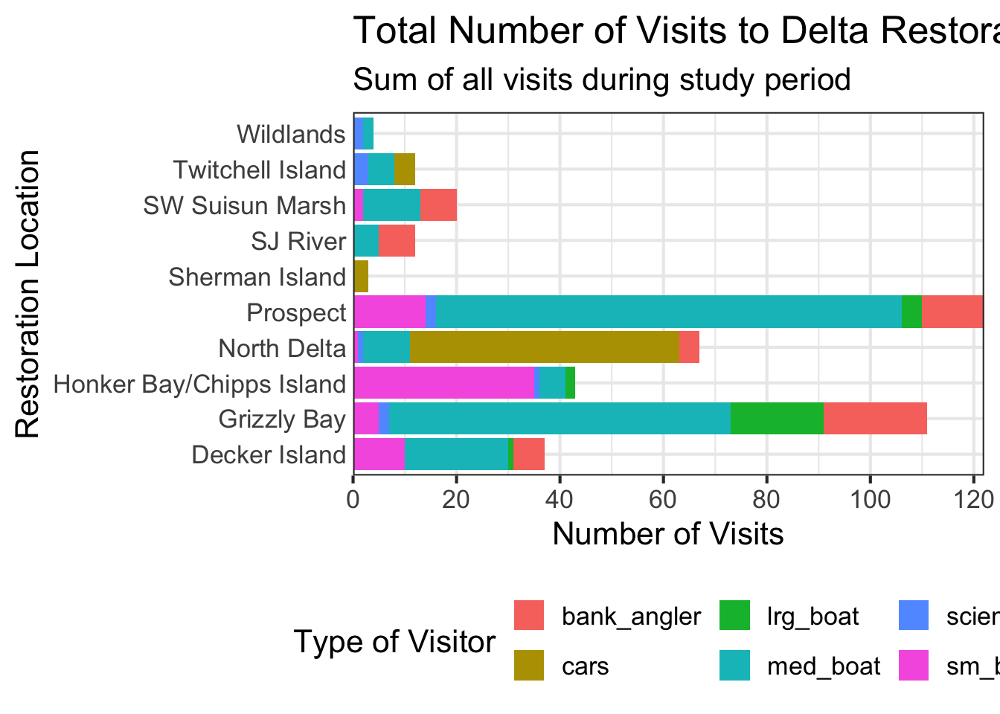
daily_visits_totals <- daily_visits_loc %>%
group_by(restore_loc) %>%
mutate(n = sum(daily_visits)) %>%
ungroup() %>%
mutate(restore_loc = fct_reorder(restore_loc, n))
head(daily_visits_totals)# A tibble: 6 × 5
restore_loc date visitor_type daily_visits n
<fct> <date> <chr> <dbl> <dbl>
1 Decker Island 2017-07-07 bank_angler 4 37
2 Decker Island 2017-07-07 cars 0 37
3 Decker Island 2017-07-07 lrg_boat 0 37
4 Decker Island 2017-07-07 med_boat 6 37
5 Decker Island 2017-07-07 scientist 0 37
6 Decker Island 2017-07-07 sm_boat 0 37levels(daily_visits_totals$restore_loc) ### not alphabetical any more! [1] "Sherman Island" "Wildlands"
[3] "SJ River" "Twitchell Island"
[5] "SW Suisun Marsh" "Decker Island"
[7] "Honker Bay/Chipps Island" "North Delta"
[9] "Grizzly Bay" "Prospect" ggplot(data = daily_visits_totals,
aes(x = daily_visits, y = restore_loc,
fill = visitor_type)) +
geom_col() +
labs(x = "Number of Visits",
y = "Restoration Location",
fill = "Type of Visitor",
title = "Total Number of Visits to Delta Restoration Areas by visitor type",
subtitle = "Sum of all visits during study period") +
scale_x_continuous(breaks = seq(0,120, 20), expand = c(0,0)) +
my_theme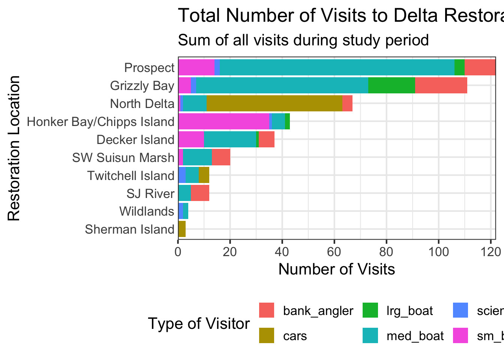
daily_visits_totals <- daily_visits_loc %>%
group_by(restore_loc) %>%
mutate(n = sum(daily_visits)) %>%
ungroup() %>%
mutate(restore_loc = fct_reorder(restore_loc, desc(n)))
ggplot(data = daily_visits_totals,
aes(x = daily_visits, y = restore_loc,
fill = visitor_type)) +
geom_col() +
labs(x = "Number of Visits",
y = "Restoration Location",
fill = "Type of Visitor",
title = "Total Number of Visits to Delta Restoration Areas by visitor type",
subtitle = "Sum of all visits during study period") +
scale_x_continuous(breaks = seq(0,120, 20), expand = c(0,0)) +
my_theme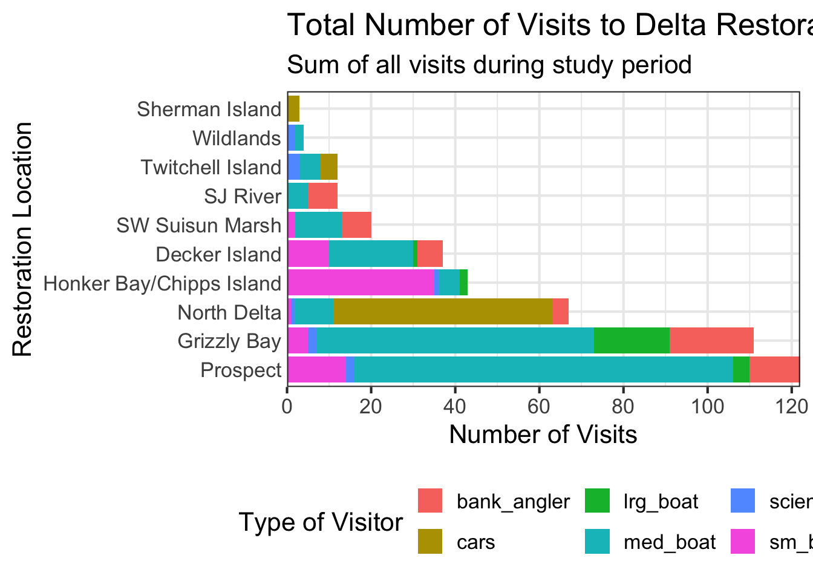
## Color
ggplot(data = daily_visits_totals,
aes(x = daily_visits, y = restore_loc,
fill = visitor_type)) +
geom_col() +
scale_fill_viridis_d() +
labs(x = "Number of Visits",
y = "Restoration Location",
fill = "Type of Visitor",
title = "Total Number of Visits to Delta Restoration Areas by visitor type",
subtitle = "Sum of all visits during study period") +
scale_x_continuous(breaks = seq(0,120, 20), expand = c(0,0)) +
my_theme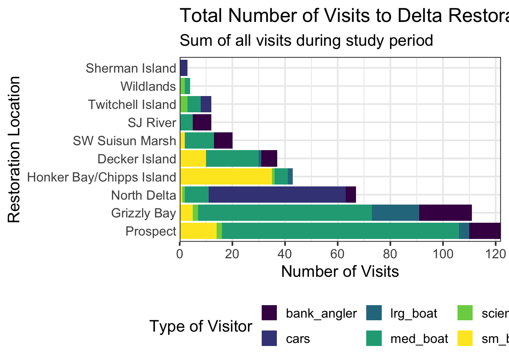
#ggsave("figures/visit_restore_site_delta.jpg", width = 12, height = 6, units = "in")## Creating mutiple plots
facet_plot <- ggplot(data = daily_visits_totals,
aes(x = visitor_type, y = daily_visits,
fill = visitor_type)) +
geom_col() +
facet_wrap(~restore_loc,
scales = "free_y",
ncol = 5,
nrow = 2) +
scale_fill_viridis_d() +
labs(x = "Type of visitor",
y = "Number of Visits",
title = "Total Number of Visits to Delta Restoration Areas",
subtitle = "Sum of all visits during study period") +
theme_bw() +
theme(legend.position = "bottom",
axis.ticks.x = element_blank(),
axis.text.x = element_blank())
facet_plot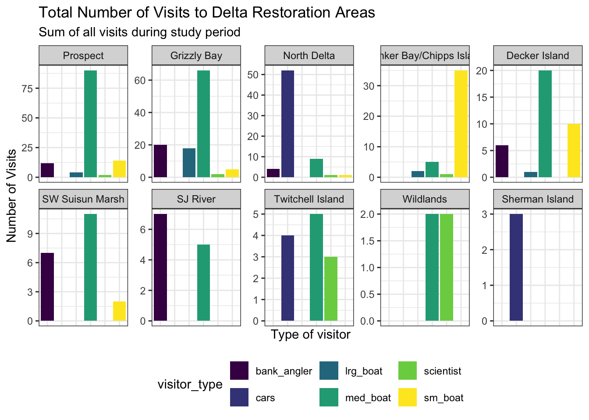
#ggsave("figures/visit_restore_site_facet.jpg", plot = facet_plot, width = 12, height = 8, units = "in")5. Interative visualization
locations <- visits_long %>%
distinct(restore_loc, .keep_all = TRUE) %>%
select(restore_loc, latitude, longitude)
head(locations)# A tibble: 6 × 3
restore_loc latitude longitude
<chr> <dbl> <dbl>
1 Decker Island 38.1 -122.
2 SW Suisun Marsh 38.2 -122.
3 Grizzly Bay 38.1 -122.
4 Prospect 38.2 -122.
5 SJ River 38.1 -122.
6 Wildlands 38.3 -122.## Display this table as an interactive table using datatable() from the DT package.
datatable(locations)6. Maps with leaflet
leaflet() package allows you to make basic interactive maps using just a couple lines of code
addTiles() function without arguments will add base tiles to your map from OpenStreetMap
addMarkers() will add a marker at each location specified by the latitude and longitude arguments
leaflet(locations) %>%
addTiles() %>%
addMarkers(
lng = ~ longitude,
lat = ~ latitude,
popup = ~ restore_loc
)leaflet(locations) %>%
addProviderTiles(providers$Esri.WorldTopoMap) %>%
addCircleMarkers(
lng = ~ longitude,
lat = ~ latitude,
popup = ~ restore_loc,
radius = 5,
# set fill properties
fillColor = "salmon",
fillOpacity = 1,
# set stroke properties
stroke = TRUE,
weight = 0.5,
color = "white",
opacity = 1)leaflet(locations) %>%
addProviderTiles(providers$Esri.WorldImagery) %>%
addProviderTiles(providers$CartoDB.PositronOnlyLabels) %>%
addCircleMarkers(
lng = ~ longitude,
lat = ~ latitude,
popup = ~ restore_loc,
radius = 5,
# set fill properties
fillColor = "salmon",
fillOpacity = 1,
# set stroke properties
stroke = TRUE,
weight = 0.5,
color = "white",
opacity = 1)7. Assignment 5
Introduction
The Sacramento-San Joaquin Delta is a socially and ecologically important region with many types of human activity. This report uses monitoring data to visualize how visitor types vary across restoration locations and to map where those locations are distributed across the Delta.
# read the socioecological monitoring data from the data folder
delta_visits_raw <- read_csv(here::here("raw_data/Socioecological_monitoring_data.csv"))Data processing
# load packages for data import, wrangling, plotting, and mapping
library(readr)
library(dplyr)
library(tidyr)
library(forcats)
library(ggplot2)
library(leaflet)
library(janitor)
library(viridis)
library(here)# clean column names into lowercase snake_case format
delta_visits <- delta_visits_raw %>%
clean_names()
delta_visits# A tibble: 55 × 13
eco_restore_approximate_loc…¹ reach latitude longitude date time_of_day
<chr> <chr> <dbl> <dbl> <date> <chr>
1 Decker Island Bran… 38.1 -122. 2017-07-07 unknown
2 Decker Island Deck… 38.1 -122. 2017-07-07 unknown
3 Decker Island Deck… 38.1 -122. 2017-07-07 unknown
4 Decker Island Deck… 38.1 -122. 2017-09-13 unknown
5 Decker Island Bran… 38.1 -122. 2017-11-07 unknown
6 Decker Island Deck… 38.1 -122. 2017-11-07 unknown
7 Decker Island Deck… 38.1 -122. 2017-11-07 unknown
8 Decker Island Bran… 38.1 -122. 2017-12-08 morning
9 Decker Island Deck… 38.1 -122. 2017-12-08 morning
10 Decker Island Deck… 38.1 -122. 2017-12-08 morning
# ℹ 45 more rows
# ℹ abbreviated name: ¹eco_restore_approximate_location
# ℹ 7 more variables: sm_boat <dbl>, med_boat <dbl>, lrg_boat <dbl>,
# bank_angler <dbl>, scientist <dbl>, cars <dbl>, notes <chr># pivot visitor count columns into long format
visits_long <- delta_visits %>%
pivot_longer(
cols = c(sm_boat, med_boat, lrg_boat, bank_angler, scientist, cars),
names_to = "visitor_type",
values_to = "quantity"
) %>%
rename(restore_loc = eco_restore_approximate_location) %>%
select(-notes)
visits_long# A tibble: 330 × 8
restore_loc reach latitude longitude date time_of_day visitor_type
<chr> <chr> <dbl> <dbl> <date> <chr> <chr>
1 Decker Island Brannan… 38.1 -122. 2017-07-07 unknown sm_boat
2 Decker Island Brannan… 38.1 -122. 2017-07-07 unknown med_boat
3 Decker Island Brannan… 38.1 -122. 2017-07-07 unknown lrg_boat
4 Decker Island Brannan… 38.1 -122. 2017-07-07 unknown bank_angler
5 Decker Island Brannan… 38.1 -122. 2017-07-07 unknown scientist
6 Decker Island Brannan… 38.1 -122. 2017-07-07 unknown cars
7 Decker Island Decker … 38.1 -122. 2017-07-07 unknown sm_boat
8 Decker Island Decker … 38.1 -122. 2017-07-07 unknown med_boat
9 Decker Island Decker … 38.1 -122. 2017-07-07 unknown lrg_boat
10 Decker Island Decker … 38.1 -122. 2017-07-07 unknown bank_angler
# ℹ 320 more rows
# ℹ 1 more variable: quantity <dbl># calculate daily visits for each location, date, and visitor type
daily_visits_loc <- visits_long %>%
group_by(restore_loc, date, visitor_type) %>%
summarise(daily_visits = sum(quantity), .groups = "drop")
daily_visits_loc# A tibble: 144 × 4
restore_loc date visitor_type daily_visits
<chr> <date> <chr> <dbl>
1 Decker Island 2017-07-07 bank_angler 4
2 Decker Island 2017-07-07 cars 0
3 Decker Island 2017-07-07 lrg_boat 0
4 Decker Island 2017-07-07 med_boat 6
5 Decker Island 2017-07-07 scientist 0
6 Decker Island 2017-07-07 sm_boat 0
7 Decker Island 2017-09-13 bank_angler 0
8 Decker Island 2017-09-13 cars 0
9 Decker Island 2017-09-13 lrg_boat 0
10 Decker Island 2017-09-13 med_boat 1
# ℹ 134 more rows# calculate total visits by location for ordering the plot
daily_visits_totals <- daily_visits_loc %>%
group_by(restore_loc) %>%
mutate(n = sum(daily_visits)) %>%
ungroup() %>%
mutate(restore_loc = fct_reorder(restore_loc, n))
daily_visits_totals# A tibble: 144 × 5
restore_loc date visitor_type daily_visits n
<fct> <date> <chr> <dbl> <dbl>
1 Decker Island 2017-07-07 bank_angler 4 37
2 Decker Island 2017-07-07 cars 0 37
3 Decker Island 2017-07-07 lrg_boat 0 37
4 Decker Island 2017-07-07 med_boat 6 37
5 Decker Island 2017-07-07 scientist 0 37
6 Decker Island 2017-07-07 sm_boat 0 37
7 Decker Island 2017-09-13 bank_angler 0 37
8 Decker Island 2017-09-13 cars 0 37
9 Decker Island 2017-09-13 lrg_boat 0 37
10 Decker Island 2017-09-13 med_boat 1 37
# ℹ 134 more rowsPlot of visits
# create a reusable theme with a white background and bottom legend
my_theme <- theme_bw(base_size = 14) +
theme(
legend.position = "bottom",
axis.ticks.y = element_blank()
)
# build a horizontal stacked bar chart of visits by location and visitor type
ggplot(data = daily_visits_totals,
aes(x = daily_visits, y = restore_loc, fill = visitor_type)) +
geom_col() +
scale_fill_viridis_d() +
labs(
x = "Number of Visits",
y = "Restoration Location",
fill = "Type of Visitor",
title = "Total Number of Visits to Delta Restoration Areas",
subtitle = "Summed across the study period"
) +
scale_x_continuous(breaks = seq(0, 120, 20), expand = c(0, 0)) +
my_theme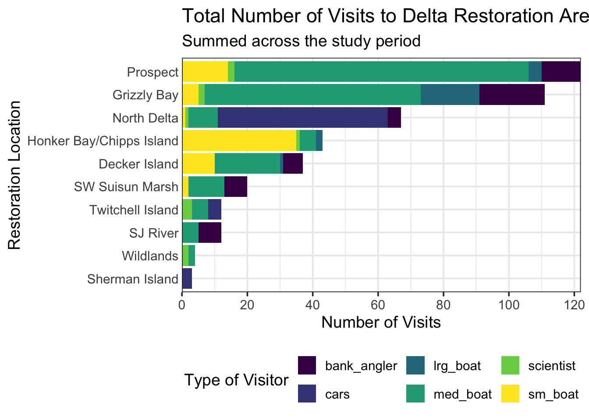
Map of locations
## Map of locations
# create a table of unique restoration locations with coordinates
locations <- visits_long %>%
distinct(restore_loc, .keep_all = TRUE) %>%
select(restore_loc, latitude, longitude)
# build an interactive map with a topographic basemap and circle markers
leaflet(locations) %>%
addProviderTiles(providers$Esri.WorldTopoMap) %>%
addCircleMarkers(
lng = ~longitude,
lat = ~latitude,
popup = ~restore_loc,
radius = 5,
fillColor = "salmon",
fillOpacity = 1,
stroke = TRUE,
weight = 0.5,
color = "white",
opacity = 1
)Discussion
The stacked bar plot helps show both how many visits each restoration site received and which types of visitors were most common. Sites like Prospect and Grizzly Bay have the longest bars, so they had the highest total number of visits during the study period, while places such as Sherman Island and Wildlands have much shorter bars and therefore much lower use. Within each bar, the different colors show how visits are divided among boats, bank anglers, scientists, and cars, which makes it easier to compare visitor patterns between locations. For example, some sites have large segments from boat visitors, while other sites show a bigger contribution from cars or bank anglers. This suggests that not all restoration areas are used in the same way, even if their total number of visits is similar.
The interactive map of restoration locations adds geographic context by showing where these sites are located in the Delta. When looking at the map together with the bar plot, it becomes easier to connect high‑use and low‑use sites with their positions on the landscape and to think about how access or local conditions might influence visitor activity.X